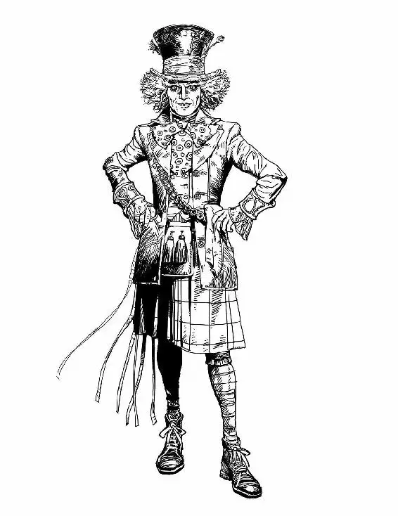

The sun was peering over the distant hills, lighting flurries of dust from the red desert below. Inside the castle, the Red Queen stood in front of one of her mirrors, wearing one of the Hatter’s enormous red hats. The Hatter tilted his head, regarding her with aloof disdain.
“No,” the Queen said, removing the hat.
The Queen’s courtiers gasped with forced delight and began to flutter around her.
“You are stunning in that hat!” cried the man with the enormous belly.
“Yes. Next,” the Queen said.
The Hatter took off the Queen’s hat and replaced it with another—this one featuring a huge brim that hid half her face. The Hatter smiled with satisfaction.
“Your Majesty has never looked better,” cooed the woman with the gigantic nose. “Another,” the Queen said. But before the Hatter could hat her head again, Lady Large Nose’s nose fell to the floor.
“You dropped something,” the Hatter said.
The woman’s eyes widened as she realized what had happened. She felt for her nose, but found only her actual nose, which was quite a normal size. With a gasp, she grabbed the fake and quickly turned away to reattach it.
The Hatter’s eyes narrowed suspiciously. Now he spotted the straps above the man’s pants which held his false protruding belly in place. The woman turned back around with her long nose reattached, and the Hatter laughed out loud, not a mad laugh this time, but one of genuine amusement. The courtiers gave him a nervous look.
“Oh. Never mind him,” the Queen said from under her hat, having missed the whole exchange. “He’s mad.” She waved one hand dismissively. “Come along.”
The female courtier with the long ears came rushing into the room. She hurried over and whispered into the Queen’s ear. The Queen’s face became redder and redder as she listened. Finally she bellowed, “STAYNE!” and everyone within hearing distance was quite happy he was not the Knave of Hearts.
Meanwhile, down in the stables, Alice was just waking up to find the ominous visage of the Bandersnatch looming over her. Somehow he’d managed to shove his eye back into its socket, where it now stared upward uselessly. And yet this seemed to please the creature—so much so that he hadn’t eaten Alice in her sleep.
Alice noticed a large key on a chain hanging around the Bandersnatch’s neck. It must be the key to the chest! Keeping her eyes on the Bandersnatch, she reached for it, then froze as the monster lowered his head to sniff her arm and the wound he’d inflicted. A sharp bolt of pain ran up to her shoulder, but she refused to be deterred. Reaching forward again, she pulled the key off his neck.
But before she could turn to the chest, the Bandersnatch’s long, thin tongue coiled out of its mouth. He began to gently lick her wound, and to her surprise, his tongue was soothing and cool. With a sigh, she let him lick the wound clean. When he stopped, the infection was miraculously gone and the swelling had gone down. Alice moved her arm around, realizing the pain was gone, too.
The Bandersnatch tilted his head at her, one eye askew.
“I suppose this makes us even now,” said Alice, but she had to admit to herself that she now felt quite a bit more warmed to the horrible, toothy creature.
The key slid perfectly into the lock on the chest, and when Alice lifted the lid, she found a gleaming sword inside. She knew instantly that it was the Vorpal Sword—no other sword could be so beautiful. It was made of shiny silver with an ornate handle. Alice lifted it up to the light and saw runes engraved on the blade.
The Bandersnatch shuffled aside to let her leave the stall, and Alice found herself patting him on the nose as she went by. She carried the sword out into the courtyard, unaware of the peril that was waiting for her back inside the castle…
“Um forced herself on me!” the Knave lied, talking fast. He knelt before the Queen in the great hall, surrounded by curious courtiers and footfrogs who were rather enjoying the spectacle of the great Knave of Hearts in trouble for once.
“I told her my heart belongs to you,” Stayne wheedled, taking the Queen’s hand. “But she’s obsessed with me!”
The Queen turned bright red with rage. “Off with her head!” she screamed.
In the Queen’s dressing room, the Dormouse was trying to pick the lock of the chain around the Hatter’s ankles. Her hatpin kept bending in the sturdy lock, and she made a small noise of irritation.
“Stand back, Mallymkun!” said a voice from the door.
The Dormouse and the Hatter both looked up at once. Standing in the doorway was Alice, victoriously wielding the Vorpal Sword high over her head. She gave the Hatter a triumphant look.
“How’s this for muchness?” Alice asked. She swung the sword toward his chain.
“No! No!” cried the Hatter, wrenching the chain out of her way. Alice staggered forward and blinked at him in surprise. He hurried on, trying to explain. “It mustn’t be used for anything but—”
“Arrest that girl for unlawful seduction!” cried another voice. The Knave of Hearts stood in the doorway, pointing at Alice. His Red Knights clattered in behind him and headed straight for her.
“Hatter!” called the Dormouse. Alice raised the sword to fight, but—
“Take it to the White Queen!” the Hatter cried.
“I’m not leaving without you!” Alice objected.
“Go!” he called out.
But Alice was hesitant. The Hatter grabbed two bolts of fabric and threw them, knocking the Red Knights down. The Knave then unsheathed his sword. The Hatter picked up a mannequin and used it to block Stayne’s blows. Stayne hovered over him, driving him back against the table. The Hatter reached over his shoulder and grabbed a powder puff. He paused for only a moment before he began to swipe Stayne across his face. Then the Knave grabbed the manequin and threw it over his shoulder. Quickly, the Hatter spun around and grabbed a perfume bottle with a sprayer and, brandishing it, jumped on a chair to bring himself to the same height as the Knave.
“Run, Alice!” the Dormouse called out.
Stayne stopped dead, and the Dormouse recognized her mistake immediately. The Knave looked at Alice, revelation spreading across his face.
“Alice?” he said slowly.
“RUN!” bellowed the Hatter.
Alice had no choice. She fled out the door with the Knights in hot pursuit.
Stayne’s voice boomed down the hall.
“SEIZE HER!
